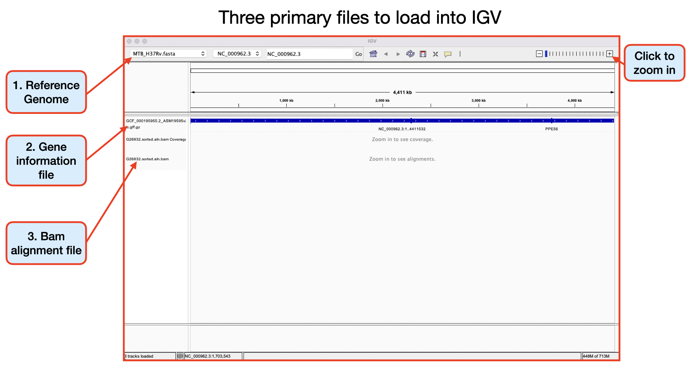
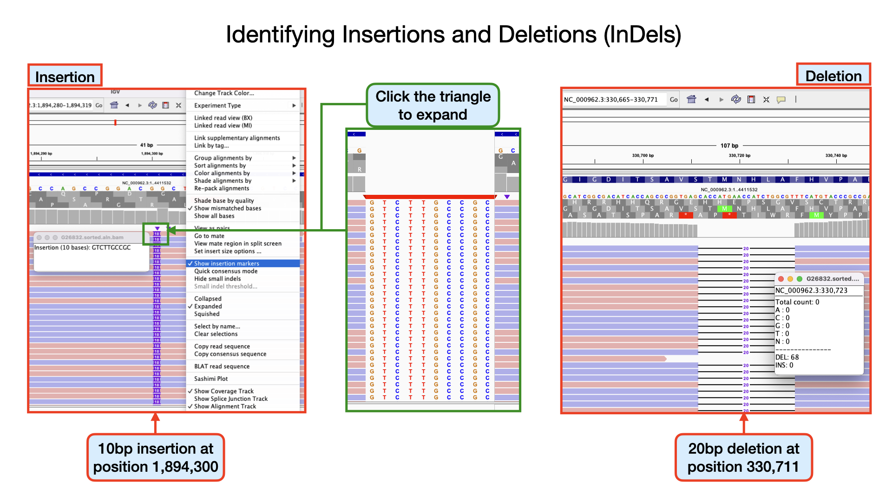
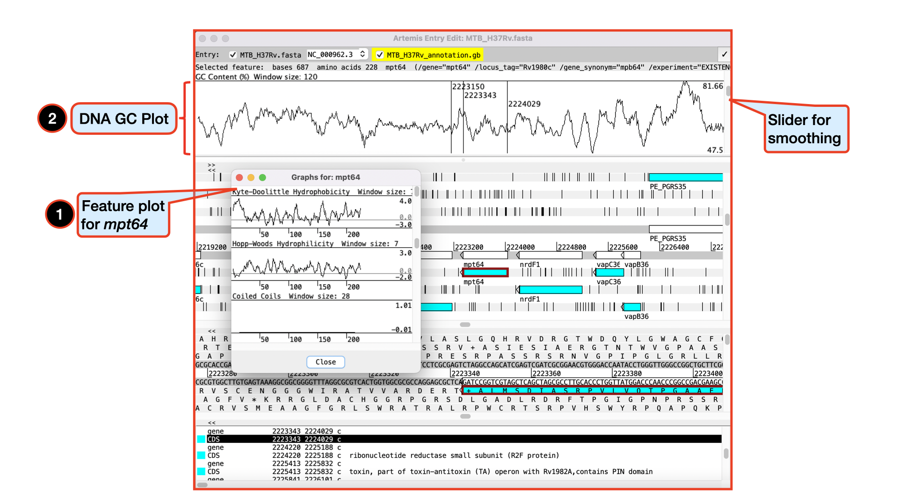
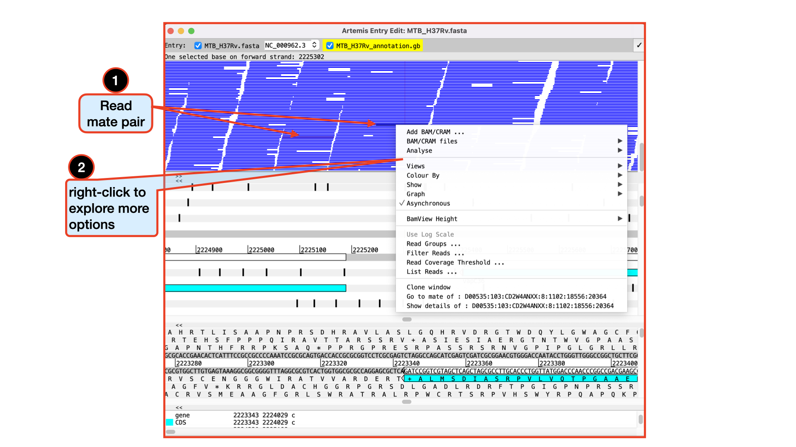
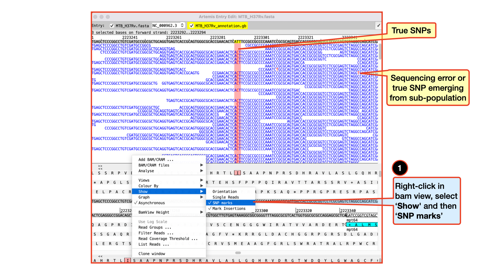

5.1 Short Read Mapping
Teaching: 90 min || Exercises: 20 min
Overview
5.1.1 Background
One of the main reasons why we will sequence the DNA of a particular organism is to be able to obtain a consensus genome from which further downstream analysis can be performed. Can you think of any analysis that you can use a consensus genome for? Okay, wait a minute, if you don’t know what a consensus genome is, we will explain it pretty soon. Basically, we will need to combine all the short reads we have generated from the Illumina sequencer into an assembled genome which we refer to as a consensus genome.
Although different software/tools are used depending on which kind of sequencing platform was used to generate the sequences, the main goal is the same: to align the sequencing reads to a reference genome, and identify any DNA changes (SNPs or Indels) relative to the reference genome from which we can build a consensus genome based on the reference genomic position. This is called consensus assembly, since we are assembling the genome of our sample from the reads and generating a consensus sequence based on changes present in several reads covering a particular position of the genome.

To achieve a consensus genome, the general data processing steps are:
- Map the reads to a reference genome.
- Perform variant calling (SNPs and indels) to identify changes relative to the reference sequence.
- Generate a consensus sequence for the sample based on those variants.
5.1.2 Activate the mapping environment
Now navigate into the short_read_mapping_MTB/ directory and activate the mapping environment:
cd ~/Desktop/workshop_files_Bact_Genomics_2023/05_mapping/short_read_mapping_MTB/mamba activate mappingHave a quick look at the directory
ls -alWe are now ready to perform some mapping and consensus assembly.
5.1.3 Mapping to a reference
A common task in processing sequencing reads is to align them to a reference genome, which is typically referred to as read mapping or read alignment. We will continue exemplifying how this works for Illumina data, however the principle is similar for Nanopore data (although the software used is often different, due to the higher error rates and longer reads typical of the platform).
Generally, these are the steps involved in read mapping:
Genome Indexing | Because reference genomes can be quite long, most mapping algorithms require that the genome is pre-processed, which is called genome indexing. You can think of a genome index in a similar way to an index at the end of a textbook, which tells you in which pages of the book you can find certain keywords. Similarly, a genome index is used by mapping algorithms to quickly search through its sequence and find a good match with the reads it is trying to align against it. Each mapping software requires its own index, but we only have to generate the genome index once.
Read mapping | This is the actual step of aligning the reads to a reference genome. There are different popular read mapping programs such as
bowtie2orbwa(for this workshop, we will use thebwa). The input to these programs includes the genome index (from the previous step) and the FASTQ file(s) with reads. The output is an alignment in a file format called SAM (text-based format - takes a lot of space) or BAM (compressed binary format - much smaller file size). You have already encountered these file formats in our file format session.BAM Sorting | The mapping programs output the sequencing reads in a random order (the order in which they were processed). But, for downstream analysis, it is good to sort the reads by their position in the genome, which makes it faster to process the file.
BAM Indexing | This is similar to the genome indexing we mentioned above, but this time creating an index for the alignment file. This index is often required for downstream analysis and for visualising the alignment with programs such as the integrated genome viewer (IGV).
Disk Usage I — Before analysis
Before we start performing any mapping analysis, let’s pause and check the space of our current working directory as we did for our previous lesson.
You can do this with the disk usage du command
du -hCurrent Disk Space In QC Directory
~895MBNow, keep this value in mind, and this time, don’t forget it. We will come back to it at the end of this chapter.
Genome Indexing with bwa
Burrows-Wheeler Aligner (BWA) is a software package for mapping low-divergent sequences against a large reference genome, such as the human genome. It consists of three algorithms: BWA-backtrack, BWA-SW and BWA-MEM. The first algorithm is designed for Illumina sequence reads up to 100bp, while the rest two for longer sequences ranged from 70bp to 1Mbp. BWA-MEM and BWA-SW share similar features such as long-read support and split alignment, but BWA-MEM, which is the latest, is generally recommended for high-quality queries as it is faster and more accurate. BWA-MEM also has better performance than BWA-backtrack for 70-100bp Illumina reads.
There are three algorithms, which one should I choose?
For 70bp or longer Illumina, 454, Ion Torrent and Sanger reads, assembly contigs and BAC sequences, BWA-MEM is usually the preferred algorithm. For short sequences, BWA-backtrack may be better. BWA-SW may have better sensitivity when alignment gaps are frequent.As we stated in our previous lesson, the starting material we will be using for our mapping is the fastq sequence that passed our QC checks. You may recall that this was identified as a Mycobacterium tuberculosis species. This species belongs to the Mycobacterium tuberculosis complex (MTBC). Consequently, we would have to align it to an appropriate reference within the same species. Fortunately for the world of TB, as with many other pathogens, there is a reference genome (MTB H37Rv) which was sequenced as far back in 1998 by Cole et. al 1998.
You can now go ahead and perform reference indexing of the H37Rv using bwa with the below command.
You should now see five new files generated in your current directory.
To see if the files have been created, run this command:
To view the statistics for the forward reads use this command:
cat That’s it – our reference index is now created
Read mapping bwa
Usage
You have already encountered the general format of the command from above. Here, we will use the mem algorithm.
The general command should look like this
bwa mem [options]] index_file_name read_1.fastq.gz read_2.fastq.gz > aln.samLet’s now go ahead and perform the mapping/alignment with bwa with the below command.
You should now see one new file generated in your current directory.
G26832.aln.samThis is a huge file and you don’t want to open it completely.
If you are eager to see what’s in it perform the command below:
BAM Sorting with samtools sort
Samtools is a set of utilities that manipulate alignments in the SAM (Sequence Alignment/Map), BAM, and CRAM formats. It converts between the formats, does sorting, merging and indexing, and can retrieve reads in any regions swiftly.
Each command has its own man page which can be viewed using e.g. man samtools-view or with a recent GNU man using man samtools view. You can also just use samtools view --help to call out the specific help function for a samtools command. For the view command, options exist to change the output format from SAM to BAM or CRAM, so this command also acts as a file format conversion utility.
Before we proceed to sorting our .sam file, let’s convert it to a .bam file using the command view. This creates a much more smaller binary file which is easier to read by downstream analysis tools.
The .sam file we created with bwa is often not really needed and most pipelines instantly convert it to a .bam file. This helps save a lot of disk space.
We can combine the two commands by simply using the pipe |. Do you remember its use from our previous lesson? We will see a lot of this in our scripts later.
You don’t need to run the below command, but if you wanted to perform both analysis at a go you would run this command:
bwa mem -t 4 MTB_H37Rv.fasta G26832_R1.trim.fastq.gz G26832_R2.trim.fastq.gz | samtools view -F 4 --threads 4 -bhS -o G26832.aln.bamThe general synthax for the samtools sort command is:
samtools sort [-l level] [-u] [-m maxMem] [-o out.bam] [-O format] [-M] [-K kmerLen]
[-n] [-t tag] [-T tmpprefix] [-@ threads] [in.sam|in.bam|in.cram]You can now go ahead and perform the BAM sorting with samtools using the below command.
Our sorted aligned file is now ready.
BAM Indexing with samtools index
We will use another command from samtools called the samtools index to index our .sorted.aln.bam file.
This index coordinate-sorted BAM files for fast random access.
You can now go ahead and perform the indexing of the .sorted.aln.bam file with the below command.
Other samtools commands to explore
In addition to the stats command, you may want to explore the flagstat and ìdxstats` commands below at you free time.
samtools flagstat
samtools flagstat – counts the number of alignments in a BAN file for each FLAG type. The commands does a full pass through the input file to calculate and print statistics to stdout. It provides counts for each of 13 categories based primarily on bit flags in the FLAG field. Information on the meaning of the flags is given in the SAM specification document.
Each category in the output is broken down into QC pass and QC fail. In the default output format, these are presented as “#PASS + #FAIL” followed by a description of the category.
The first row of output gives the total number of reads that are QC pass and fail (according to flag bit 0x200). For example:
4131522 + 2 in total (QC-passed reads + QC-failed reads)Which would indicate that there are a total of 4131524 reads in the input file, 4131522 of which are marked as QC pass and 2 of which are marked as “not passing quality controls”
Click here for more description on understanding the output of the command.
You can go ahead and try out the command and have a look at its output.
samtools idxstats
samtools idxstats – reports alignment summary statistics The command retrieves and print stats in the index file corresponding to the input file.
The output is TAB-delimited with each line consisting of reference sequence name, sequence length, # mapped read-segments and # unmapped read-segments. It is written to stdout. Note this may count reads multiple times if they are mapped more than once or in multiple fragments.
5.1.4 Genome Visualization
You can think of some benefits derived from manually visualizing genomes – Compared to cost of writing, debugging and running computational scripts, visual inspections may be low cost and may also have high performance. For instance what you physically see really makes sense (seeing patterns for instance) and you have the chance of also identifying issues and outliers even though laborious (debugging).
There are over 40 genome browsers – some works only online, but there are others you can get a local copy. Which one you choose depends on a number of factors: - task at hand - kind of data - size of data - confidentiality of data (data privacy)
We will not go deep into the tools used for browsing genomes, however, we will attempt to give in-depth introduction into a couple of these tools.
Integrative Genomics Viewer (IGV)
The Integrative Genomics Viewer (IGV) is a high-performance, easy-to-use, interactive tool for the visual exploration of genomic data. It supports flexible integration of all the common types of genomic data and metadata, investigator-generated or publicly available, loaded from local or cloud sources.
Datasets that can be analysed with IGV range from epigenomics, microarrays, NGS alignments, RNA-Seq to mRNA-, CNV- Seq.
You can click here to Download the IGV software and also check out their Publication.
Aligned reads from sequencing can be loaded into IGV in the BAM format, SAM format, or CRAM format. IGV requires that BAM and CRAM files have an associated index file.
The main data file must include the .bam or .cram extension. The index file should have the same filename but with the .bai or .crai extension. For example, the index file for G26832.sorted.aln.bam would be named G26832.sorted.aln.bam.bai. When loading by URL, the URL to both the data file and the index file should be specified. When loading by file, IGV automatically searches for the index file within the same directory as the data file.
After installation of the software, the basic things to do to get you going are: - Launch the software - Select a reference genome - Load your data - Load any extra annotation data relative to your reference genome that you may need - Navigate through the data


NB. For this workshop, we will focus on analysing our genomic data to look out for variants - SNPs and INDELs.
There are a huge variety of features you can explore in IGV. 
Click to watch the YouTube video below for a brief introduction to IGV – Sequencing Data Basics.
Click to watch the YouTube video below for a brief introduction on SNP analysis in IGV.
Identifying SNPs | Homozygous, Heterozygous, Strand Bias
Important metrics for evaluating the validity of SNPs are: - Coverage - Amount of support - Strand bias / PCR artifacts - Mapping quality scores - Base quality scores

Identifying Homozygous SNPs At position 2,259,657 the nucleotide A from the reference sequence has mutated to a C within our sample genome. This represents a single nucleotide polymorphism (SNP). If you scroll through, you see that all the 109 reads covering that position called the nucleotide C implying this is a true positive SNP and also called an homozygous SNP.

Identifying Heterozygous SNPs In other SNP situations, you will find that only about half the number of reads covering that SNP site called a different nucleotide. Such SNPs are called heterozygous SNPs. This arise because there may be more than one population (sub-population) of bacteria within the sample. You can see a lot of this within the region 2,266,478 to 2,266,628. At position 2,266,598 you that out of the 205 reads, exactly half mapped to the nucleotide C and the remaining half mapped to the nucleotide G.
Detecting Strand Bias In some situations, due to sequencing errors, a false heterozygous SNP can be called. One way to detect false heterozygous SNPs is by looking at the number of forward and reverse reads that called that SNP. If you find that all the SNPs are found on only the forward reads and not reverse reads (or vice versa), then it probably was due to sequencing error. This type of error is called strand bias.
Identifying Insertions and Deletions (InDels)

Identifying insertions At position 1894300 the nucleotide GG from the reference sequence has mutated to GGTCTTGCCGCG within our sample genome. This represents an insertion of 10 nucleotides. If you scroll through your genomic data, you see that more than 80% of the aligned reads have this mutation. Can you identify other insertions?
Identifying deletions At position 330711 the nucleotide GCACCATGAACCATCTGGCGT from the reference sequence has mutated to G within our sample genome. This represents a deletion of 20 nucleotides at that site. If you scroll through, you see that all the 68 aligned reads at that position have this mutation. Can you identify other deletions?
Note that, these INDELS we have detected, may or may not have phenotypic consequences depending on the location.
If you have the time, watch the YouTube video below for some more detailed explanation into the use of IGV.
Follow this link to explore more on IGV.
Artemis
The Artemis Software is a set of software tools for genome browsing and annotation. Several types/sets of information can be viewed simultaneously within different contexts. For example, Artemis gives you the two views of the same genome region, so you can zoom in to inspect detailed DNA sequence motifs, and also zoom out to view local gene architecture (e.g. operons), or even an entire chromosome or genome, all within one screen. It is also possible to perform analyses within Artemis and save the output for future reference.
The Artemis Software includes: - Artemis - ACT - BamView - DNAPlotter
Artemis is a free genome browser and annotation tool that allows visualisation of sequence features, next generation data and the results of analyses within the context of the sequence, and also its six-frame translation. Artemis is written in Java, and is available for UNIX, Macintosh and Windows systems. It can read EMBL and GENBANK database entries or sequence in FASTA, indexed FASTA or raw format. Other sequence features can be in EMBL, GENBANK or GFF format.
ACT is a free tool for displaying pairwise comparisons between two or more DNA sequences. It can be used to identify and analyse regions of similarity and difference between genomes and to explore conservation of synteny, in the context of the entire sequences and their annotation.
DNAPlotter generates images of circular and linear DNA maps.
BamView is a standalone BAM/CRAM file viewer.
Starting up the Artemis software
Double click the Artemis icon on the desktop. Alternatively, you can type art in the terminal and hit Enter to open artemis. A small start-up window will appear (see below). The directory /Desktop/workshop_files_Bact_Genomics_2023/05_mapping/genome_browser/ all files you will need for this module. Now follow the sequence of numbers to load up the MTB_H37Rv.fasta reference sequence.

Loading an annotation file (entry) into Artemis
Follow the numbers to load the annotation file MTB_H37Rv_annotation.gb.

The basics of Artemis
Let’s take a closer look at what Artemis offers us:
Drop-down menus: There are lots in there so don`t worry about all the details right now.
Entry (top line): shows which entries are currently loaded with the default entry highlighted in yellow (this is the entry into which newly created features are created). Selected feature: the details of a selected feature are shown here; in this case gene STY0004 (yellow box surrounded by thick black line).
This is the main sequence view panel. The central 2 grey lines represent the forward (top) and reverse (bottom) DNA strands. Above and below those are the 3 forward and 3 reverse reading frames. Stop codons are marked on the reading frames as black vertical bars. Genes and other annotated features (eg. Pfam and Prosite matches) are displayed as coloured boxes. We often refer to predicted genes as coding sequences or CDSs.
This panel has a similar layout to the main panel but is zoomed in to show nucleotides and amino acids. Double click on a CDS in the main view to see the zoomed view of the start of that CDS. Note that both this and the main panel can be scrolled left and right (7, below) zoomed in and out (6, below).
Feature panel: This panel contains details of the various features, listed in the order that they occur on the DNA. Any selected features are highlighted. The list can be scrolled (8, below).
Sliders for zooming view panels.
Sliders for scrolling along the DNA.
Slider for scrolling feature list.

Getting around in Artemis
There are three main ways of getting to a particular DNA region in Artemis:
-the Goto drop-down menu
-the Navigator and
-the Feature Selector
The best method depends on what you are trying to do. Knowing which one to use comes with practice.
The functions on the ‘Goto’ menu (below the Navigator option) are shortcuts for getting to locations within a selected feature or for jumping to the start or end of the DNA sequence. This is really intuitive. You can give it a try. The Navigator panel is also within the Goto menu and fairly intuitive so open it up and give it a try.

It may seem that Goto Start of Selection and Goto Feature Start do the same thing. Well they do if you have a feature selected but Goto Start of Selection will also work for a region which you have selected by click-dragging in the main window. So yes, give it a try!
Feature Keys and Qualifiers – a brief explanation of what they are and a sample of the ones we use.
The list of keys and qualifiers accepted by EMBL in sequence/annotation submission files are listed at the following web page: (http://www3.ebi.ac.uk/Services/WebFeat/)
Viewing Plots and Graphs
Feature plots can be displayed by selecting a CDS feature then clicking View and Feature Plots. The window which appears shows plots predicting hydrophobicity, hydrophilicity and coiled-coil regions for the protein product of the selected CDS.
In addition to looking at the fine detail of the annotated features it is also possible to look at the characteristics of the DNA covering the region displayed. This can be done by adding various plots to the display, showing different characteristics of the DNA. Some of the plots can be used to look at the protein coding potential of translation frames within the DNA, and others can be used to search for horizontally acquired DNA (such as GC frame plot).
To view the graphs: Click on the Graph menu to see all those available and then tick the box for GC Content (%). To adjust the smoothing of the graph you change the window size over which the points on the graph are calculated, using the slider shown below.

Viewing and exploring bam files in Artemis
Like we did with IGV, it is also very possible and maybe much intuitive to view bam files in Artemis. Let’s go ahead and load in our G26832.sorted.aln.bam file by following the instructions below.
Please make sure you do not go to a zoomed-out view of Artemis, but stay at this level, as display of BAM files does take time to load!

You should see the BAM window appear as in the screen shot below. In the top panel of the window each little horizontal line represents a sequencing read. Notice that all the reads are blue which indicates that these are unique reads, whereas we would have seen alternating green reads representing “duplicated” reads that have been mapped to exactly the same position on the reference sequence. Remember we have removed duplicates during our trimming hence don’t expect to see it them here. (To save space, if there are duplicated reads only one is shown, which means that there could be a large number of duplicated reads at a given position but the software only depicts one).
If you click a read its mate pair will also be selected. Also note that if the cursor hovers over a read for long enough details of that read will appear in a small box. You can right-click in the bam view (the panel showing the coloured sequence reads) to see more options and explore them. Note that, if selected reads fall in a region of interest, being able to access some information easily can be really helpful.

There are a lot of quality checks you can perform with a loaded bam file especially if it has not been cleaned. You can explore these quality features with a raw (unfiltered/untrimmed) bam file. You can actually use several details relating to the mapping of a read to filter the reads from the BAM file that are shown in the window. To do this, right-click again over the stack plot window showing the reads and select Filter Reads…. A window will appear with many options for filtering.
Viewing and calling out SNPs
To view SNPs use your right mouse button to click in the BAM view window. Then in the popup menu click on Show and check the SNP marks box. SNPs in your data in comparison to the reference sequence are shown as red marks on the individual reads. In other words, the red marks appear on the stacked reads highlighting every base in a read that does not match the reference. When you zoom in you can see some SNPs that are present in all reads and appear as vertical red lines, whereas other SNPs are more sporadically distributed. The former are more likely to be true SNPs whereas the latter may be sequencing errors, although this would not always be true.

Clearly there are many more features of Artemis which we will not have time to explain in detail. If you still have time, before getting on with the next section it might be worth browsing the menus. Hopefully you will find most of them easy to understand. You can always go back to this after the when you have enough time to explore. All the lessons we learnt in exploring the BAM file in IGV can also be explored in Artemis.
5.1.5 Variant calling
As you saw from the genome visualization tools, it may be tedious to generate a list of variants if you are working with several BAM files. Thankfully, there are command line tools that helps us achieve this purpose and even perform more advanced analysis on our BAM files, which have been developed by the same samtools development team. It isn’t called samtools this time, but rather bcftools, I guess the name originated from the output file format – .bcf.
bcftools is a set of utilities for variant calling and that also manipulate variant calls in the Variant Call Format (VCF) and its binary counterpart BCF. All commands work transparently with both VCFs and BCFs, both uncompressed and BGZF-compressed.
BCFtools is designed to work on a stream. It regards an input file “-” as the standard input (stdin) and outputs to the standard output (stdout). Several commands can thus be combined with Unix pipes
You can check out their publications and their manual page to get more information.
For this workshop, we will explore only four of the commands. - bcftools mpileup - bcftools call - bcftools view - bcftools filter
bcftools: mpileup, call and view
bcftools mpileup – Generates VCF or BCF containing genotype likelihoods at each genomic position with coverage for one or multiple alignment (BAM or CRAM) files.
bcftools call – SNP/indel variant calling from VCF/BCF. To be used in conjunction with bcftools mpileup. This command replaces the former bcftools view caller.
bcftools view – subset and filter VCF or BCF files by position and filtering expression. Convert between VCF and BCF.
I am sure we are now very much aware and happy with the use of the pipe |. We will combine all three commands with | in order to speed up things.
Let’s briefly define each of the options we have used in the above command
| Input option | Input required | Description |
|---|---|---|
| –fasta-ref | FILE | The faidx-indexed reference file in the FASTA format. The file can be optionally compressed by bgzip. Reference is required by default unless the –no-reference option is set [null] |
| –min-BQ | INT | Caps the base quality to a maximum value [60]. This can be particularly useful on technologies that produce overly optimistic high qualities, leading to too many false positives or incorrect genotype assignments. |
| –annotate | LIST | Comma-separated list of FORMAT and INFO tags to output. (case-insensitive, the “FORMAT/” prefix is optional, and use “?” to list available annotations on the command line) [null]: (see table below for the list of “FORMAT/” and “ÏNFO/” tags) |
| –output-type | b|u|z|v[0-9] |
Output compressed BCF (b), uncompressed BCF (u), compressed VCF (z), uncompressed VCF (v). Use the -Ou option when piping between bcftools subcommands to speed up performance by removing unnecessary compression/decompression and VCF←→BCF conversion. The compression level of the compressed formats (b and z) can be set by by appending a number between 0-9. |
| –ploidy | ASSEMBLY[?] | predefined ploidy, use list (or any other unused word) to print a list of all predefined assemblies. Append a question mark to print the actual definition. |
| –multiallelic-caller | alternative model for multiallelic and rare-variant calling designed to overcome known limitations in -c calling model (conflicts with -c) |
“FORMAT/” and “INFO/” tags
| Tag | Description |
|---|---|
| FORMAT/AD | .. Allelic depth (Number=R,Type=Integer) |
| FORMAT/ADF | .. Allelic depths on the forward strand (Number=R,Type=Integer) |
| FORMAT/ADR | .. Allelic depths on the reverse strand (Number=R,Type=Integer) |
| FORMAT/DP | .. Number of high-quality bases (Number=1,Type=Integer) |
| FORMAT/SP | .. Phred-scaled strand bias P-value (Number=1,Type=Integer) |
| FORMAT/SCR | .. Number of soft-clipped reads (Number=1,Type=Integer) |
| INFO/AD | .. Total allelic depth (Number=R,Type=Integer) |
| INFO/ADF | .. Total allelic depths on the forward strand (Number=R,Type=Integer) |
| INFO/ADR | .. Total allelic depths on the reverse strand (Number=R,Type=Integer) |
| INFO/SCR | .. Number of soft-clipped reads (Number=1,Type=Integer) |
| FORMAT/DV | .. Deprecated in favor of FORMAT/AD; Number of high-quality non-reference bases, (Number=1,Type=Integer) |
| FORMAT/DP4 | .. Deprecated in favor of FORMAT/ADF and FORMAT/ADR; Number of high-quality ref-forward, ref-reverse, alt-forward and alt-reverse bases (Number=4,Type=Integer) |
| FORMAT/DPR | .. Deprecated in favor of FORMAT/AD; Number of high-quality bases for each observed allele (Number=R,Type=Integer) |
| INFO/DPR | .. Deprecated in favor of INFO/AD; Number of high-quality bases for each observed allele (Number=R,Type=Integer) |
You can have a quick look at the output file G26832.vcf.gz Note that, the output file is a compressed file. To view a compressed file we use zcat, and since we do not want to view the entire content of the file, we pipe it to head. Pipe | should be your friend by now. :)
bcftools filter
bcftools filter – basically filters VCF files by applying fixed-threshold filters
Before we run bcftools filter we will need to create an index of our .vcf.gz file. To do this, we will use the command tabix.
Now that we have our index file let’s go back to perform our filtering.
We perform the filtering by running the following command:
Can you think of any analysis we can use our G26832.filtered.vcf.gz file for?
The last thing we will do is to try to generate a consensus sequence or an assembled genome from our G26832.filtered.vcf.gz file. We call this assembled genome a pseudogenome. Remember that the assembled genome will be coming from our mapped sequences and so will have the same number of genomic positions as our reference genome. Later in this course, we will see how to assemble a genome directly from the raw reads. We call this kind of assembly a denovo assembly.
For now, let’s focus on getting our pseudogenome.
There are various tools to do this but we will use a simple python script to archive this.
5.1.6 Generating a consensus sequence
Our consensus sequence (pseudogenome) will be generated in a fasta file format.
Parse vcf files into fasta format
We will run a simple python script to achieve this purpose. In your working directory, you will find a file named vcf2pseudogenome.py. This is a simple python script that will do the job for us.
We can go ahead and execute that python script by running the command below:
You should now see another file generated in your directory called G26832.fas. What the python script did was to pick the variants called from the vcf file and replace them in the reference genome to call out the new file.
Now let’s go ahead and have a look at the top five lines of the G26832.fas file with the command:
Disk Usage II — Cleaning up after analysis
Now that we are done investigating our genomic sequences, let’s pause again and check the space of our current working directory.
You can do this with the disk usage du command
du -hHow much disk space have you used since the start of the analysis? I’m sure it’s about 2.2G. Just from one set of reads, we have generated about 2G of data we may not need. Imaging if we had hundreds of samples. What files do you consider not necessary to keep? Let’s do some cleaning up. We will remove rm all files that we may not need for further analysis. Most of these files are intermediate files and can always be reproduced if we need to.
remove all .sam files if not needed
rm *.samremove all bam files if not needed
rm *bam*5.1.7 Mapping to pseudogenome bash script: Putting it all together
Now let’s try this out! We will generate pseudogenomes and some quality statistics for three pairs of reads from Illumina paired-end sequencing. We will perform all the analysis above in one run while generating all the various files at each stage within the pipeline in tandem.
Running multiple samples with a simple bash script
This is a pipeline to map short reads to a reference assembly. It outputs some quality statistics, does variant calling and produces a pseudogenome of each input sample.
All the fastq files needed for this analysis are located in the current working short_read_mapping_MTB directory. You can have a look by simply running the below command to check out all the forward reads present in the current directory.
Let’s have a look at the QC bash script we are going to run:
cat mappingTofasta.shJust like the script used in our previous lesson, this script also contains several commands, some are combined together using pipes. (UNIX pipes is a very powerful and elegant concept which allows us to feed the output of one command into the next command and avoid writing intermediate files. If you are not comfortable with UNIX or how scripts look like and how they work, consider revisiting the UNIX tutorial or more specifically bonus shell script.
Now run the script to create the quality statistics and pseudogenomes (this may take a while):
The script will produce all the intermediate and final files we have encountered in this session.
Perform a simple ls command with the arguments -lhrt and view the most recent files created.
ls -lhrtCongratulations!!! You just created your first set of pseudogenomes using a bash script.
5.1.8 Deactivate mapping environment
Now that we are done with all our analysis, let’s deactivate the mapping environment:
mamba deactivate5.1.9 Credit
Information on this page has been adapted and modified from the following source(s):
https://github.com/cambiotraining/sars-cov-2-genomics
https://bio-bwa.sourceforge.net/
http://www.htslib.org/doc/samtools.html
https://software.broadinstitute.org/software/igv/home
https://www.ncbi.nlm.nih.gov/pmc/articles/PMC3346182/
https://github.com/sanger-pathogens/Artemis
Wellcome Genome Campus Advanced Courses and Scientific Conferences 2017 - WORKING WITH PATHOGEN GENOMES Course Manual http://www.wellcome.ac.uk/advancedcourses